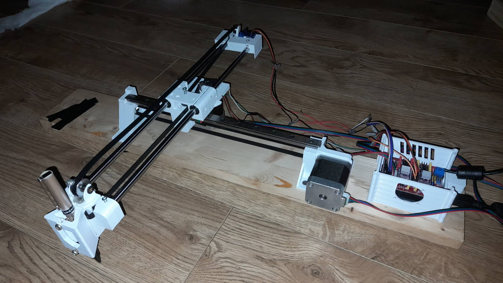

პენ პლოტერი, კომპიუტერით კონტროლირებადი მანქანა, რომელიც ხატავს გრაფიკულ გმაოსახულებას ან ტექტს სიზუსტითა და სისწრაფით.

პენ პლოტერი, კომპიუტერით კონტროლირებადი მანქანა, რომელიც ხატავს გრაფიკულ გმაოსახულებას ან ტექტს სიზუსტითა და სისწრაფით.
პლოტერი მუშაობს ორ X_სა და Y ღერძზე, რომლის მოძრაობას უზრუნველყობს ბიჯური ძრავი, ხოლო კალამს მართავს სერვო . მას შეუძლია რთული ხაზებით ნახატების დახატვა. კოორდინატები იტვირთება მანქანის კონტროლერი პროგრამით. გამოსახულების ფაილი გარდაიქმნება G-კოდად სპეციალური პროგრამის მეშვეობით. შემდეგ კოდი გადაეცემა მიკროკონტროლერს, რომელიც აძლევს ძრავებს მოძრაობის ისნტრუქციას დახატვისთვის.
პროექტზე მუშაობდნენ: